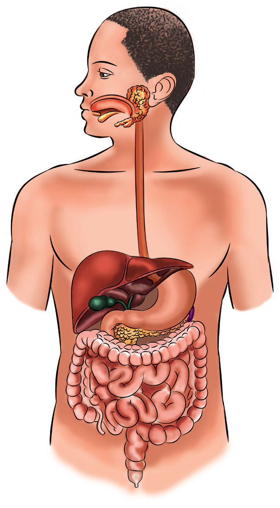

Student’s Book - Form Two

Biology for Secondary Schools
39

Mouth
Liver
Gall bladder
Duodenum
Ileum
Appendix
Anus
Rectum
Colon
Pancreas
Stomach
Oesophagus
Salivary gland
Pharynx
Figure 2.1: Digestive system of a human being
The digestion process
Task 2.2
Search the library and internet sources
the animations about the human digestion
process. Observe the animation and
describe the digestion processes in the mouth, stomach, duodenum and small intestine. Then, write short notes.
Digestion involves two sub-processes,
which are mechanical and chemical breakdown of food nutrients. The
mechanical digestion process takes place
in the mouth, where large food particles
are chewed by the teeth and broken
down into small particles. The process
continues in the stomach where the small
particles swallowed from the mouth
are further broken down into smaller
particles. The chemical breakdown of
food into simpler molecules is done by
chemical substances called enzymes.
Enzymes are produced by the glands
found in the mouth, stomach, small intestine, and pancreas. The break
down of food into smallest particles is
necessary to enable nutrients and organic
molecules obtained from the food to be
absorbed and utilised in the body.
Digestion in the mouth
The process of digestion begins in the mouth and continues through the alimentary canal that extends from the mouth, pharynx, esophagus, stomach,
08/04/2026 10:18:13